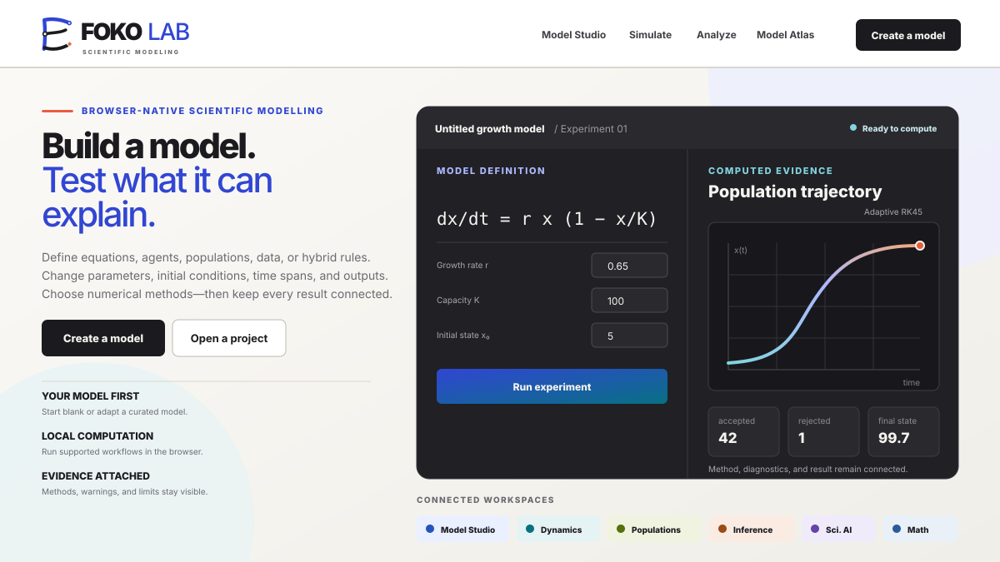
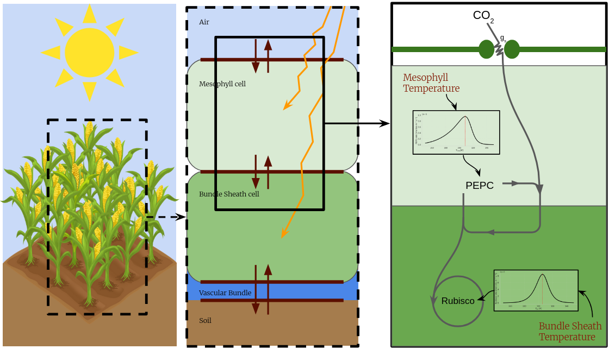
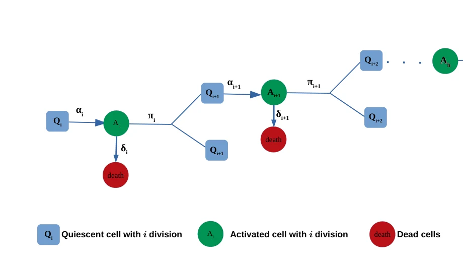
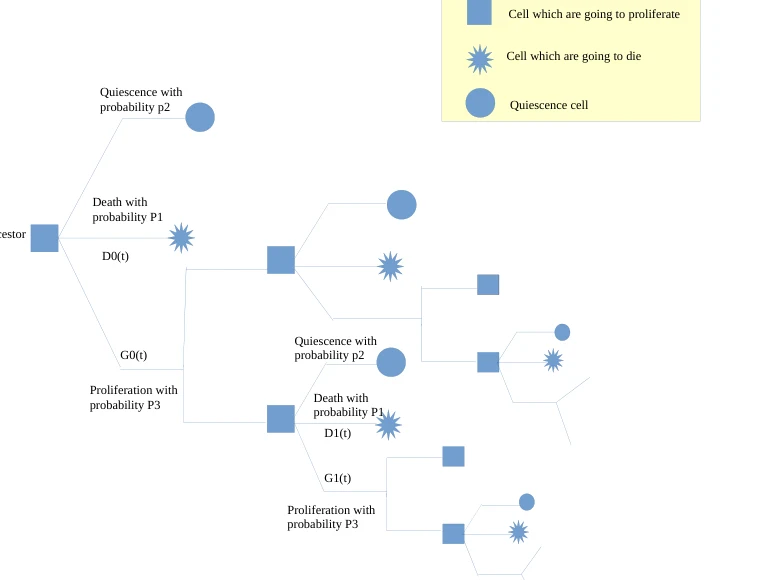

Models across scales.
A modelling portfolio from population dynamics and metabolic networks to coupled plant–environment physiology, plus the software built to make scientific models explorable and reproducible.
Models as usable computational tools

FokoLab — define → simulate → analyse → validate → export.
FokoLab
A modelling platform centred on user-defined problems: specify equations and parameters, run deterministic or stochastic simulations, fit and optimise models, analyse sensitivity and uncertainty, inspect diagnostics and visualisations, and export reproducible evidence. The model atlas is a starting point, not the product.
Plant adaptation across the C3–C4 continuum
First-principles modelling of C3–C4 adaptation under climate constraints.

C4 leaf: energy balance with temperature-dependent PEPC and Rubisco across mesophyll and bundle-sheath.
Photosynthesis climate adaptation model
A model coupling leaf energy balance, hydraulics, and biochemical assimilation to predict carbon gain across the C3–C4 continuum, with sensitivity analysis and parameter optimisation.
Fatty-acid metabolism
PhD work on hepatic lipid metabolism: de novo synthesis, enzyme kinetics, and bistable switching between fed and fasted states.

Bistability model: acetyl-CoA → malonyl-CoA → fatty acids → triglycerides, fed vs fasted.
Fatty-acid metabolism bistability
A coarse-grained ODE model that produces switching between fed and fasted regimes, analysed for the conditions that give bistability.

De novo elongation: chain growth to myristic, palmitic, and stearic acid.
Fatty-acid de novo synthesis model
A semi-mechanistic, enzyme-kinetic model of chain elongation and the relative output of myristic, palmitic, and stearic acid.
T-cell stochastic dynamics
Stochastic models of T-cell proliferation fitted to CFSE division data.

Master equation: quiescent/activated generations with activation, division, and death.
T-cell proliferation models
A stochastic master-equation framework over quiescent and activated generations, with moments from probability-generating functions and likelihood-based fitting.

Branching-process view of successive divisions.
Master thesis — Mathematical models of T-cell proliferation
Smith–Martin and Cyton models, branching processes, and master equations compared against CFSE data, with a negative-binomial likelihood.
Papers & preprints
Kinetic data for modeling the dynamics of the enzymes involved in animal fatty acid synthesis
Kinetic parameters assembled for modelling animal fatty-acid synthesis. Read paper →
Metabolic Engineering · 2022Interrogating the effect of enzyme kinetics on metabolism using differentiable constraint-based models
Enzyme kinetics inside differentiable constraint-based models, with metabolic control analysis. Read paper →
bioRxiv · 2025 · preprintGrowth Mechanics and the Emergence of Metabolic Oscillations in Growing Cells
With H. Dourado, W. Liebermeister, and M. J. Lercher. Read preprint →